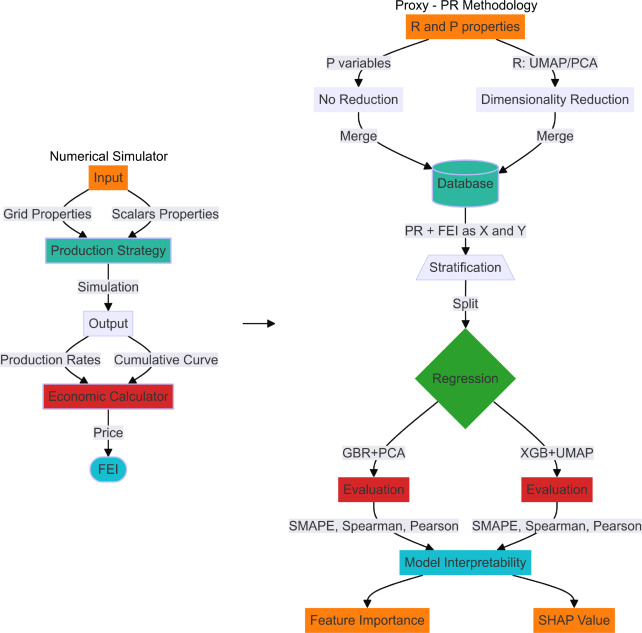
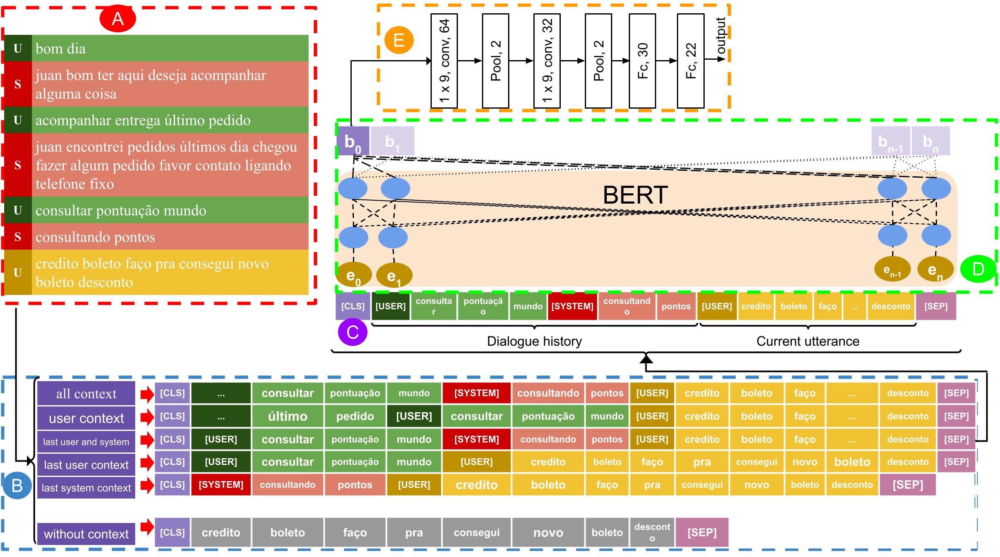
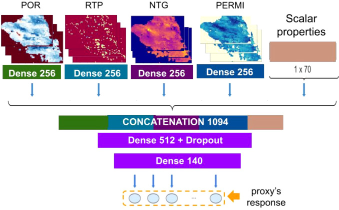
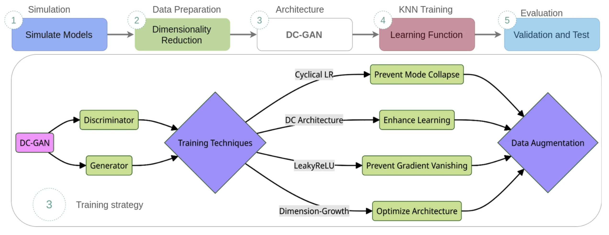
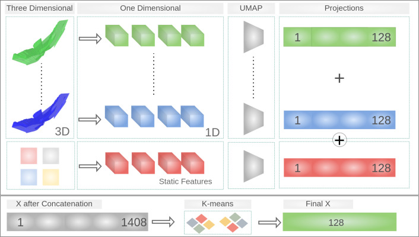
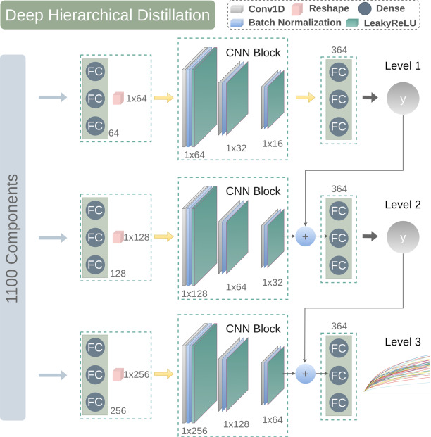
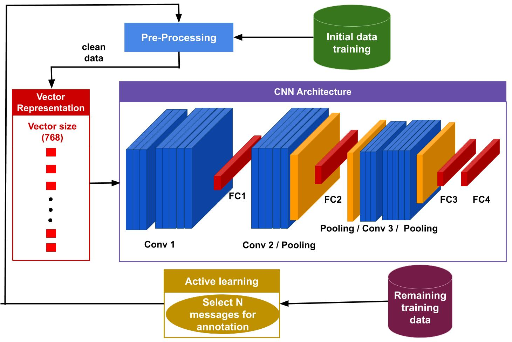
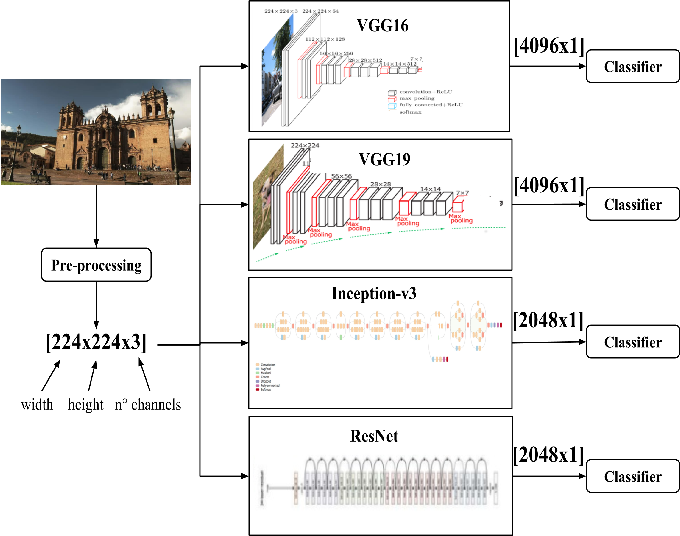
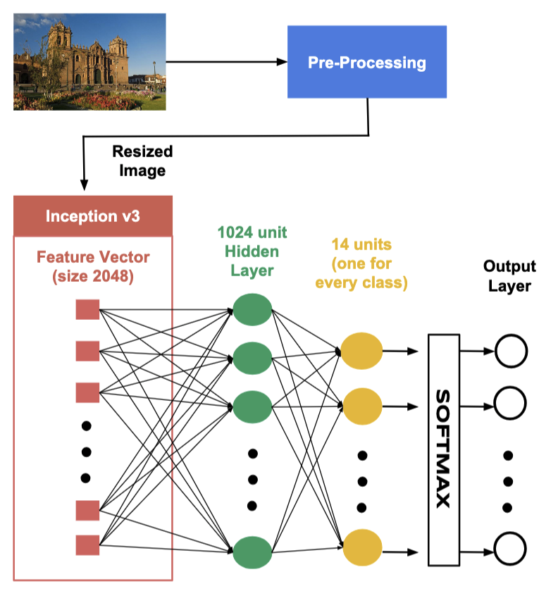

2021–2025
PhD in Computer Science
UNICAMP, Brazil
Thesis: Model Uncertainty Quantification to Improve Oil Reservoir Simulations
Thesis PDF
Postdoctoral Researcher @ UNICAMP & Software Developer @ Samsung SiDi
I am a Cusco-born Peruvian, currently working as a Postdoctoral Researcher at the University of Campinas (UNICAMP) and a Software Developer at Samsung Instituto De Desenvolvimento (SiDi), specializing in Machine Learning, Natural Language Processing (NLP), and Computer Vision. I recently completed my PhD in Computer Science at UNICAMP, advised by Anderson Rocha and Gabriel Cirac Mendes Souza, where my research focused on Deep Learning and its applications in Oil Geological Reservoir and Uncertainty Quantification.
Throughout my career, I have bridged the gap between academic research and industry application. My current work at Samsung involves the integration of Bixby and Samsung Interpreter into a global ecosystem, where I optimize TTS (Text-to-Speech) models to improve prosody and naturalness across multiple languages. Simultaneously, as a postdoctoral fellow sponsored by Shell Oil, I develop ML-based frameworks for the automated interpretation of 3D/4D seismic signals, enhancing decision-making in reservoir engineering.
Previously, I earned my Master’s in Computer Science from UNICAMP, advised by Julio Cesar dos Reis, focusing on Conversational Systems and NLP. I hold an Informatics Engineering and Systems degree from UNSAAC in Peru, where I was advised by Lauro Enciso Rodas and John Edgar Vargas Muñoz and graduated in the upper fifth percentile. I have also held positions as an ML/DL Instructor at the University of Engineering and Technology (UTEC) and collaborated on industry research projects with Sinch Latin America and Shell Brazil.
2021–2025
PhD in Computer Science
UNICAMP, Brazil
2019–2021
M.Sc. in Computer Science
UNICAMP, Brazil
2012–2017
B.Sc./Eng. Computer Engineering
UNSAAC, Peru (Graduated in the top 20% of the class)

Journal: Applied Soft Computing, 2025
Gabriel Cirac, Guilherme Daniel Avansi, Jeanfranco Farfan , Denis José Schiozer, Anderson Rocha

preprint: ArXivg , 2024
Jeanfranco Farfan , Julio Cesar dos Reis

Journal: Applied Soft Computing, 2024
Jeanfranco Farfan , Gabriel Cirac, Guilherme Daniel Avansi, Celio MAschio, Denis José Schiozer, Anderson Rocha

Journal: Neural Computing and Applications, 2024
Gabriel Cirac, Jeanfranco Farfan , Guilherme Daniel Avansi, Denis José Schiozer, Anderson Rocha

Journal: Applied Soft Computing, 2024
Gabriel Cirac, Jeanfranco Farfan , Guilherme Daniel Avansi, Denis José Schiozer, Anderson Rocha

Journal: Engineering Applications of Artificial Intelligence, 2024
Gabriel Cirac, Jeanfranco Farfan , Guilherme Daniel Avansi, Denis José Schiozer, Anderson Rocha

Conference: IEEE 15th International Conference on Semantic Computing (ICSC), 2021
Jeanfranco Farfan , Kelly Lopes, Julio Cesar Dos Reis

Conference: IEEE XXV International Conference on Electronics, Electrical Engineering and Computing (INTERCON), 2018
Jared Leon Malpartida, Jeanfranco Farfan , Gladys Cutipa Arapa

Conference: IEEE XXIV International Conference on Electronics, Electrical Engineering and Computing (INTERCON), 2017
Jeanfranco Farfan , Lauro Enciso Rodas, John Edgar Vargas Muñoz
2021: Shell Oil Company Industry Research Scholarship
2019: Sinch Latin America Industry Research Scholarship
2018: First place in the AgroHack hackathon. Developed a mobile app for the recognition, monitoring, and support of plant diseases using IBM Cloud services. Cusco, Peru.
2014: Winner of the Technology Fair UNSAAC with a project using PIC 16F84A